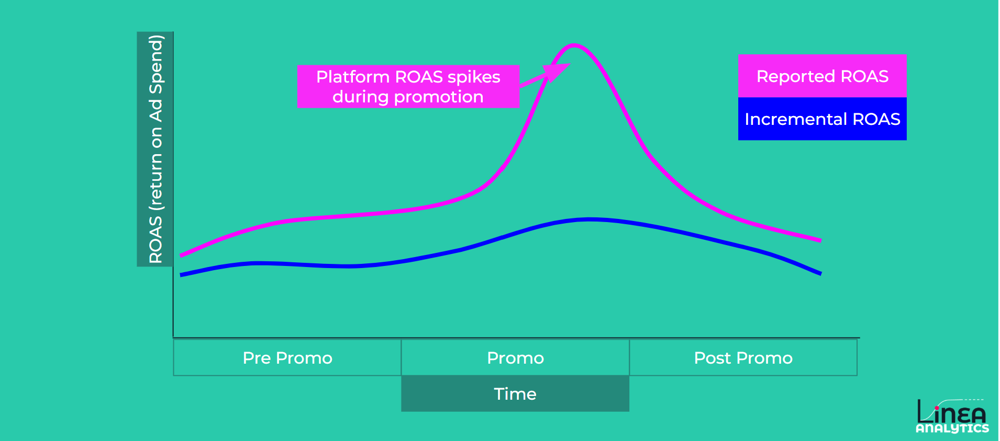

“We are growing at 40%+. Is there any point in measuring the impact of our marketing?”
It’s a question I have been asked a few times this year from fast-scaling brands. When new customer numbers are flying, does understanding what is happening in this environment translate to future recommendations?
But, this is the best time to get ahead. Knowing what levers to pull to maintain growth is essential.
Imagine spending £1m a year on marketing. If 10% of that budget is going towards customers who would have converted anyway, that’s £100k potentially being spent without generating any growth. WIth that £100k better spent on maintaining the fats growth. And that’s only one of the questions measurement can answer.
In my experience, measuring high growth brands requires overcoming three crucial challenges:
Without incrementality (MMM), you don't know if your growth is coming from your brand's natural momentum or your paid spend. The cost? You could be spending thousands to "buy" customers who were already going to convert.
Brands often think channels work in isolation. They don't. At Linea, we see how external factors and product launches move your CAC. If you don't understand the interplay, you can't build a repeatable growth model.
The below image demonstrates how Platform ROAS (e.g. in Meta) can overestimate the impact of external factors. In this example when we run a promotion Platform ROAS shows that marketing performance improves dramatically when we run a promotion. In reality when we measure marketing incrementality the impact could largely be driven by the promotion

This one can be tricky. When everything is at max spend, it's easy to lose track of where the next pound should go. Is it PMax? Is it Meta? Without a testing structure that balances growth with accuracy, you'll eventually hit a ceiling and see increasing CAC.
Growing at 40% is a great position to be in.
But the opportunity isn't just to measure that growth. It's to understand what drives it, protect what works and find the next source of growth before rising acquisition costs force you to.
Have any project on mind?
For immediate support: